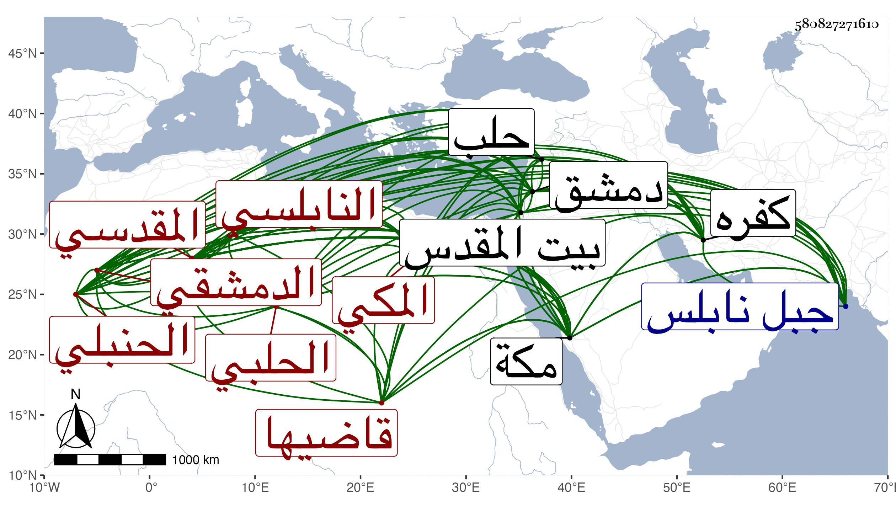

0902Sakhawi.DawLamic.ITO20230111-ara1.EIS1600.580827271610
Biography ID: 580827271610
1027
محمد بن أحمد بن سعيد العز المقدسي الأصل النابلسي ثم الدمشقي الحلبي المكي قاضيها الحنبلي . ولد فيما كتبه لي بخطه في سنة إحدى وسبعين وسبعمائة بكفر لبد بفتح اللام والموحدة من جبل نابلس ونشأ به فحفظ القرآن ثم انتقل في سنة تسع وثمانين لصالحية دمشق فتفقه بها على التقي بن مفلح وأخيه الجمال عبد الله والعلاء بن اللحام والشهاب الفندقي ثم لحلب في سنة إحدى وتسعين فحفظ بها عمدة الأحكام ومختصر الخرقي وعرضهما وتفقه فيها أيضا بالشرف بن فياض وسمع بها على ابن صديق وناب بها في القضاء وفي الخطابة بجامعها الكبير ثم لبيت المقدس في سنة اثنتي عشرة وأقام به إلى أثناء سنة ثماني عشرة ثم لدمشق أيضا ، وحج وجاور مرارا وسمع من الجمال بن ظهيرة وكتب له بخطه جزاءا من مروياته ثم قطن مكة من سنة اثنتين وخمسين وناب في إمامة المقام الحنبلي بها بل ولي قضاء الحنابلة فيها بعد موت السيد السراج عبد اللطيف الفاسي ، وكان إماما عالما كثير الاستحضار لفروع مذهبه مليح الخط دينا ساكنا منجمعا عن الناس مديما للجماعة مع كبر سنة متواضعا حسن الخلق عفيفا نزها محمود السيرة في قضائه . وله تصانيف منها الشافي والكافي في مجلد وكشف الغمة بتيسير الخلع لهذه الأمة في مجلد لطيف والمسائل المهمة فيما يحتاج إليه العاقد في الخطوب المدلهمة وسفينة الأبرار الجامعة للآثار والأخبار في المواعظ في ثلاث مجلدات والآداب وزعم بعضهم أنه حدث بالروضة النبوية وأخذ عنه فيها الوائي والبدر البغدادي وهو الساعي له في قضاء مكة وأنه سمع من الحافظ ابن رجب بحيث كان آخر من روي عنه بالسماع فالله أعلم بهذا كله ، أجاز لي . ومات بمكة في ليلة الخميس رابع عشر صفر سنة خمس وخمسين وصلى عليه من الغد ودفن بالمعلاة رحمه الله .
